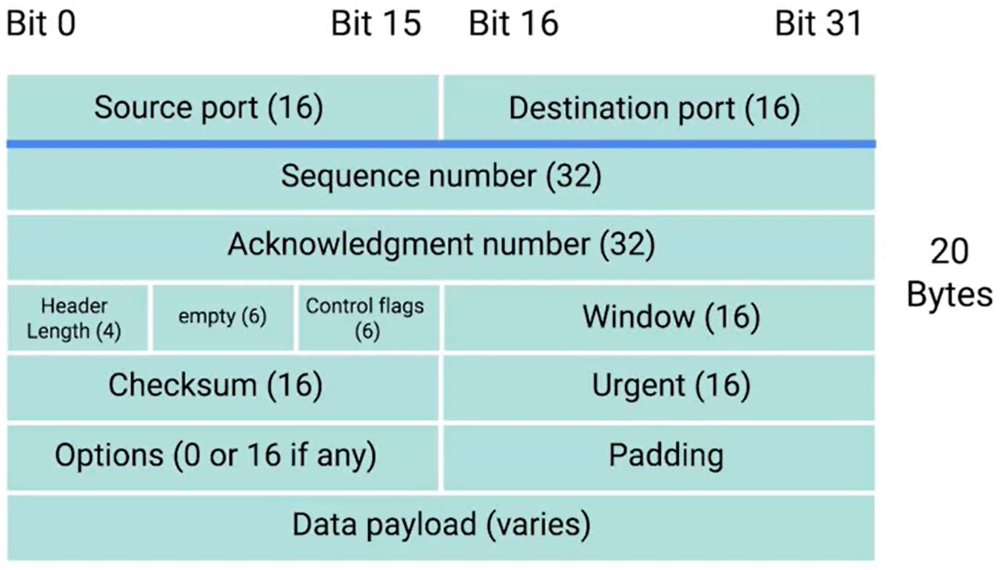

* TCP is a Conection-Oriented protocol - it establishes a connection and uses that to ensure all data is properly transmitted
in the IP and ethernet layers, if a packet has a non-valid checksum, it is discarded.
resending packets is maintained by TCP, through the constand ACKs and sequence and acknoledgment numbers. (wireshark!)
sequence number allow for all data to be put together in the right order
UDP - conecctionless protocol - no validation - less bandwidth is used to send the same amount of data
Once a TPC segment tells a service to listen for requests through a port, that listening port becomes a "socket." In other words, a socket is an active port used by a service.
Ethernet frame has a payload section which is the entire contents of an IP datagram.
IP datagram has a payload section and this is made up of what's known as a TCP segment. (encapsulation!)
as such. TCP segment is made out of header (which contains many parts) and payload

A source port is a high numbered port chosen from a special section of ports known as ephemeral ports.
when we ask a server for an HTTP page through Destination port 80, the source port is the requesting app - eg chrome browser (and not something else)
sequence number- is is a 32-bit number that's used to keep track of where in a sequence of TCP segments this one is expected to be.
Acknowledgement Number– A 32-bit field that holds the acknowledgement number, i.e, the byte number that the receiver expects to receive next. It is an acknowledgement for the previous bytes being received successfully.
Header Length (HLEN) – This is a 4-bit field that indicates the length of the TCP header by a number of 4-byte words in the header, i.e if the header is 20 bytes(min length of TCP header), then this field will hold 5 (because 5 x 4 = 20) and the maximum length: 60 bytes, then it’ll hold the value 15(because 15 x 4 = 60). Hence, the value of this field is always between 5 and 15.
Control flags– These are 6 1-bit control bits that control connection establishment, connection termination, connection abortion, flow control, mode of transfer etc.
Their function is:
URG: Urgent pointer is valid
ACK: Acknowledgement number is valid( used in case of cumulative acknowledgement)
PSH: Request for push
RST: Reset the connection
SYN: Synchronize sequence numbers
FIN: Terminate the connection
Window size – This field tells the window size of the sending TCP in bytes.
Checksum– This field holds the checksum for error control. It is mandatory in TCP as opposed to UDP.
Urgent pointer – mostly not in use. This field (valid only if the URG control flag is set) is used to point to data that is urgently required that needs to reach the receiving process at the earliest. The value of this field is added to the sequence number to get the byte number of the last urgent byte.